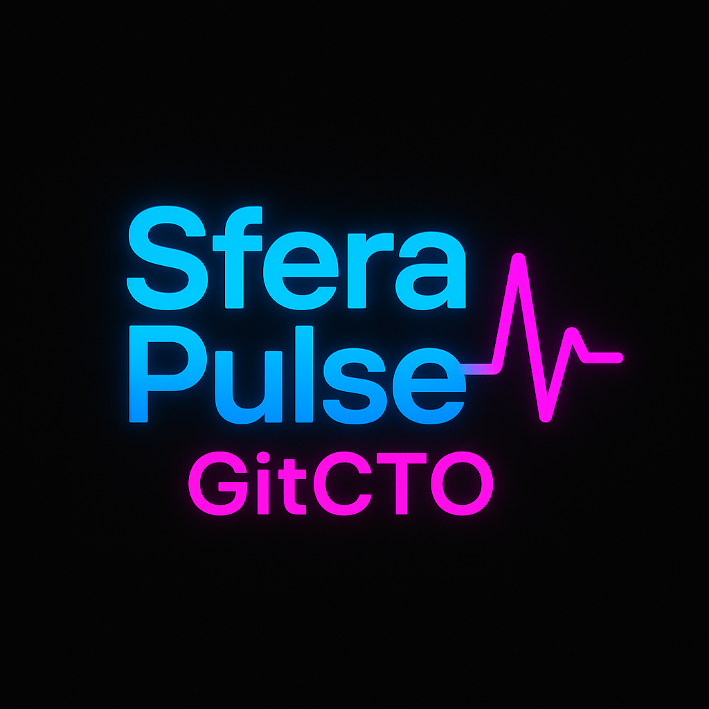
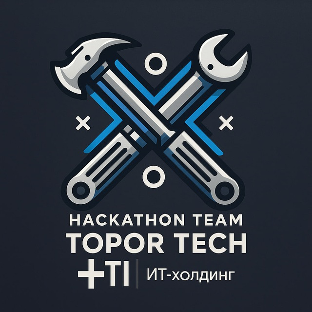

[ПЛЕЙСХОЛДЕР ДЛЯ ВИДЕО-ДЕМО]
Демонстрация основных функций системы
[ПЛЕЙСХОЛДЕР ДЛЯ ДИАГРАММЫ Mermaid]
Sequence Diagram: Пользователь → Web UI → Backend → Sfera API → Git/DB
[СКРИНШОТ 1]
Главный дашборд
[СКРИНШОТ 2]
Детальная аналитика
[СКРИНШОТ 3]
Система рекомендаций
[СКРИНШОТЫ KPI МЕТРИК]
Визуализация ключевых показателей эффективности
WIP: Слишком много задач в работе одновременно
Cycle Time vs размер задачи: Анализ эффективности обработки задач разного размера
Throughput: Низкая скорость мерджа в мастер (по команде и по разработчику)
[СКРИНШОТ 1]
Высокий WIP - перегрузка команды
[СКРИНШОТ 2]
Низкий Throughput - медленная работа
[СКРИНШОТ 3]
Длинный Cycle Time - узкие места
[СКРИНШОТ 4]
Красные индикаторы в дашборде